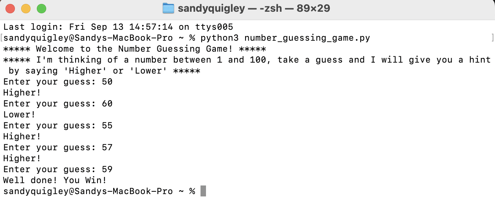

Games


Below is a number guessing game, running in Terminal. It starts by defining a random_number, I set this to random.randint(1, 100), but it could be any number.
The user then inputs a number, and the script prints higher, or lower - depending on the relation of user_number and random_number.
I would really like to try a Wordle-like game using the same principles, but would have to import a dictionary library, or link a text file with suitable-length words.
Below is a video of my game, "Missy Munch". Named after one of my cats, I made this game following a PyGame guide on YouTube, designed to help viewers build a game in the style of "Copter".
Using the steps from the video, I created the basic landscape and then customised elements, which led to me designing the pixel art and music, then spending a long time learning how to animate images and import music within VS Code.
Finally, here is a video of the hardest game I have worked on to date, Ninja Peeps. Named after my other cat, this game really stretched my knowledge (and patience...)
Building on what I learned from Missy Munch, I wanted to make a platformer that features my other cat "Peeps". This was a lot harder and most of the information I was looking for was not in the YouTube videos I was watching as guides, which led to me downloading a few other platformer games on Github and testing some of their features.
The plan was to start with my basic knowledge (and YouTube) on level 1, and then improve the game every level - however the problem with this, as I learned by level 3, was that by storing all of the levels within one file, it becomes a nightmare to find your way around. Also rules that you made for the first level will impact future levels unless properly defined every time, in future if I tried this again I would separate levels into different files, so any functions could be more specified.
Unlike Missy Munch, which has no pre-determined end, this game crashes after level 3, as I set it to go to level_four, but never actually defined it.